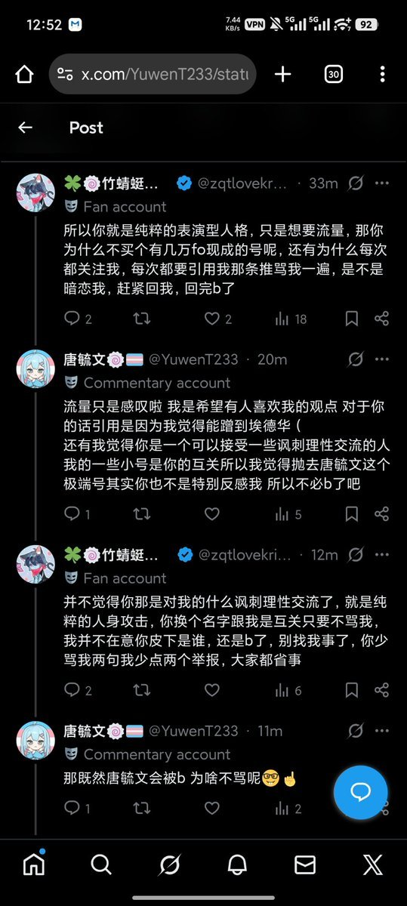

🍀🍥竹蜻蜓🍥🍀
@zqtlovekris99
我讲真的你如果真的想《重新开始》你换个皮去好好当个mtf，别搞那些抽象事，没人在意你皮下是谁。你一次次用同一个ID回来只是想吃你当唐毓文时期搞出的流量而已

🍀🍥竹蜻蜓🍥🍀
@zqtlovekris99
我给你们捋一下唐毓文的逻辑
1.骂我蹭死人流量并亲口承认自己是想蹭死人流量
2.歪曲事实，说之前骂我《毒虫》《母➗》之类的话为「讽刺理性交流」，如果不是因为我记仇我可能就真信了，并且还会内耗觉得是不是我太玻璃心了。我知道推上有很多缺爱缺朋友喜欢内耗的人，这就是他开始PUA的第一步。 https://t.co/dsKQvTlxsa